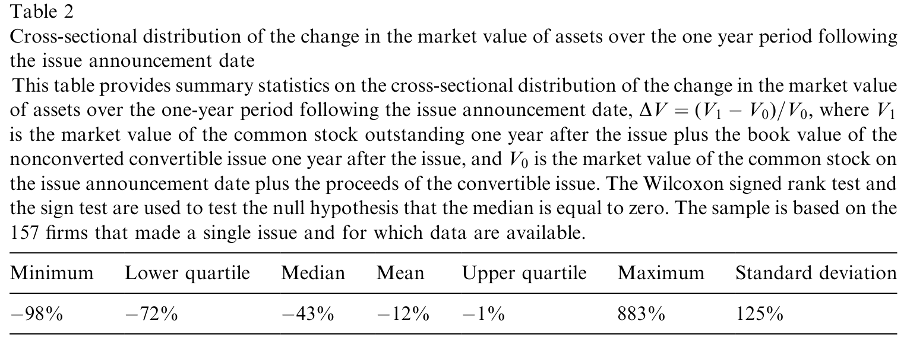
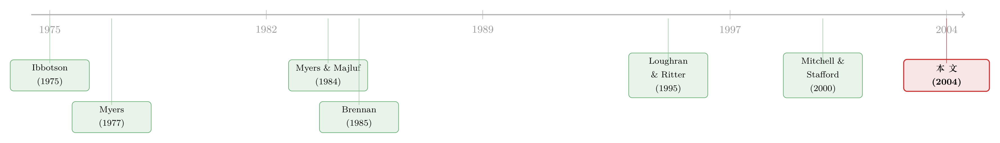

说好了「保护股东」，怎么反手把股价绞死了？——死亡螺旋可转债的两副面孔
本文读的是 Hillion & Vermaelen (2004, Journal of Financial Economics)：一种叫「浮动转换价可转债」(floating-priced convertible) 的金融创新，本意是为「被低估的高风险小公司」量身定做的理想融资工具，结果发行之后股东在一年里平均亏掉了 34% 的财富，85% 的样本一年后是负收益——而这一切，发生在美股史上最强的牛市之一里。论文给出了两个互相纠缠、却都说得通的解释：是合约设计有毒，还是公司本来就快死了？
1 一个「理论上完美」的工具，为什么人人喊打
先说一个反差。
如果你是一家小公司的 CFO：公司有前景，但还没盈利，股价被市场低估；想发债，潜在的财务困境成本太高，没人敢借；想增发股票，又怕在「便宜」的时候把股权贱卖出去。你被夹在中间，左右为难。
这时有人递给你一份合约：浮动转换价可转债。它的转换价格不是事先钉死的，而是盯着未来一段时间的股价来定——投资人将来转股时，转换价等于「回望期」(look-back period) 内股价的某个折扣。换句话说，发行价不是今天定，而是等投资人将来转股时才定，最好等股价涨上去再说。
从投资人的角度，这份合约堪称优雅。Brennan (1985) 早就指出，让转换价浮动可以绕开 Myers & Majluf (1984) 那套折磨人的逆向选择难题。论文里举了个干净的例子：一张面值 $1000、折扣 20%、回望期只有一天的可转债，
投资人根本不在乎股票今天是
$12.50还是$1.25。转股时他要么拿到 100 股、要么拿到 1000 股，两种情形下变现都是$1250。
只要股价为正、公司老老实实履约，投资人就被保护得严严实实——这不正是「为被低估的好公司省钱」的完美设计吗？按照这套逻辑（论文称之为低估假说 (undervaluation hypothesis)），发行应当是个利好信号，宣告日之后股价该涨才对。
可现实呢？财经媒体给它起的外号是 death spiral——死亡螺旋。还有一长串别名：floorless convertibles（无底转债）、toxic convertibles（毒可转债）、junk equity（垃圾股权）。一连串公司发了它之后股价崩盘。
理论上的天使，实践中的恶魔。 这就是全文要解开的张力。
2 三种假说：到底谁在杀死股价
接着，一个自然的问题是：如果发行之后股价确实大跌，那到底是「工具」的错，还是「公司」的错？论文把答案拆成三个互斥又可检验的假说。
低估假说：公司被低估、发债是好公司的信号 → 宣告日及之后正的异常收益。
有毒合约假说 (faulty contract design hypothesis)：合约本身的设计鼓励了卖空。可转债持有人（以及闻风而来的职业卖空者、对冲基金）有动机在转股前砸盘，把股价压到公允价值以下；由于转换价盯着被压低的股价，转股发生在「贱价」，稀释了每股价值 → 负的异常收益，而且折扣越大、跌得越狠。
最后融资假说 (last-resort financing hypothesis)：投行的辩护词是——发行人根本没得选，因为股价被高估了，既发不了普通债、也发不了固定转换价的可转债。后续的下跌只是市场逐渐看清了公司糟糕的经营。问题在公司，不在工具 → 同样是负的异常收益，但额外预测：发行后经营业绩会异常恶化。
注意这三者的微妙之处：低估假说和另外两个，在「股价方向」上就分道扬镳了；而有毒合约和最后融资，在股价方向上一致（都跌），要靠别的证据（经营业绩、折扣的作用）才能分开。这正是后面识别策略的关键。
3 模型：把「死亡螺旋」一步步算出来
这篇论文最漂亮的地方，是它没有停留在讲故事，而是用一个极简模型把「卖压如何摧毁股东价值」算成了一个公式。下面一步步走。
为了看清机制，作者先做一组理想化假设：零交易/发行成本、零无风险利率、风险中性、可转债按公允价值发行、募资投入零 NPV 项目、发行前全股权融资。记号如下：
- \(N_0\)：发行前的普通股股数；\(P_0\)：发行前股价；
- \(F\)：可转债面值；\(d\)：转换折扣（\(d<1\)），并令 \(\delta = 1-d\)；
- \(P_r\)：参考价（假设等于当时市价）；\(P_c = \delta P_r\)：转换价；
- \(C_0 = F/\delta\)：可转债公允价值。
发行后公司市值为
$$V_0 = N_0 P_0 + C_0.$$
第一步：没有卖压时。 若募资投入零 NPV 项目、且没有卖压，股价应停在 \(P_0\)，于是 \(P_r = P_0\)，转换价
$$P_c = \delta P_0.$$
持有人转股拿到的新股数为 \(M = F/P_c = F/(\delta P_0)\)。在数值例（$P_0=\$12.5,\ F=\$1000,\ d=0.2,\ \delta=0.8$）里，$P_c=\$10$、\(M=100\) 股。一切风平浪静。
第二步：引入卖压。 现在假设持有人（或外部卖空者）砸盘，把股价打到 \(P_m\)，并在一个中间价 \(P_s\) 上做空，满足 \(P_0 \ge P_s \ge P_m\)。由于参考价盯着被打低的市价，转换价变成 \(\delta P_m\)，持有人能拿到的股数变多：
$$L = \frac{F}{\delta P_m},\qquad L \ge M.$$
持有人用其中 \(M\) 股平掉空头、剩下 \((L-M)\) 股在市场抛售，其头寸价值为
$$M P_s + (L-M)P_m = M(P_s - P_m) + L P_m.$$
第三步：卖空到底多赚了多少。 与「不卖空、直接按 \(P_c=\delta P_0\) 转股」相比，做空带来的增量利润正好是
$$M(P_s - P_m).$$
直觉很朴素：就是「在 \(P_s\) 做空 \(M\) 股、在 \(P_m\) 买回」的差价。注意——这个增量利润里没有折扣 \(d\)。也就是说，卖空的动机本身并不依赖折扣大小。这一点稍后会反转。
第四步：股东亏了多少。 这才是全文的题眼。卖压散去后，长期股价（论文记作 \(P^{*}\)）为
$$P^{*} = \frac{N_0 + M}{N_0 + L}\,P_0.$$
因为 \(L \ge M\)，分子小于分母，\(P^{*} \le P_0\)——股价被永久性地稀释下去了。原股东的财富损失 \(\Delta W_s\) 是发行前后股权市值之差：
$$\Delta W_s = N_0 P_0 - \frac{N_0 + M}{N_0 + L}\,N_0 P_0 = N_0 P_0\,\frac{L-M}{N_0+L}.$$
利用 \(M = (P_m/P_0)\,L\) 代入、整理，就得到全文的核心结论——每股损失：
这条公式干净得惊人：股东的每股损失 = 稀释程度 × 卖压幅度。两个旋钮——折扣（决定 \(\lambda\)）和卖压（决定 \(P_0-P_m\)）——拧得越狠，股东亏得越多。在数值例里 \(\lambda = 125/225 = 0.56\)，每股损失 $0.56\times(12.5-10)=\$1.39$。
但真正关键的一步在于一个不对称：股东的损失，并不等于可转债持有人的收益。例子里股东亏了 $139，持有人只赚了 $100，中间 $39 的差额，是转移给了那些以低价从持有人手里接盘的「新股东」。这说明死亡螺旋不是简单的财富从老股东转移给债主——而是有一部分价值被卖压凭空摧毁了。这一点后面要靠数据验证。
这里藏着有毒合约假说最尖锐的预测。在「完美预期」下，持有人若能同时算准卖压和稀释，会做空比 \(M\) 更多的股——理性的话是 \(M+L\) 股。于是：折扣越大，持有人越有动机多砸、越愿意配合早转股、也越能吸引职业卖空者。这就把「折扣」重新塞回了机制里——尽管第三步说卖空利润与折扣无关，但「是否值得早转股并配合砸盘」却高度依赖折扣。于是有毒合约假说预测：折扣与股票收益负相关。
4 数据与识别：在最强的牛市里，看股东怎么亏钱
模型给了三套互斥的预测，接下来就看数据替谁说话。
数据。 作者收集了 1994 年 12 月之后、1998 年 8 月之前宣告的全部浮动转换价可转债，共 467 个观测。事件研究的收益窗口落在 1995 年 1 月至 1999 年 12 月——这正是美股史上最猛的牛市之一。发行人的画像高度一致：小、年轻、风险高。还有两个值得记住的合约细节：约 70% 的可转债有明确到期日、到期时剩余本金转为普通股；回望期平均只有 5 天。
识别。 长期事件研究最大的敌人是「基准选得对不对」。作者在方法论上的贡献，是提出用 倾向得分 (propensity score) 来给每家发行公司匹配一个合适的对照组——把「哪类公司会去发死亡螺旋」这件事先建模，再按倾向得分分组比较异常收益（这套思路承袭自 Dehejia & Wahba, 1998，而长期异常收益的统计陷阱则来自 Barber & Lyon, 1997 与 Mitchell & Stafford, 2000 的警告）。
主要结果，逐条对账：
-
股东巨亏。 发行后一年，股东平均损失
34%的财富，85%的样本一年后是负收益。在一个全民牛市里出现这种数字，直接否决了低估假说。 -
不是简单的财富转移。 「普通股 + 可转债」合在一起的标的资产价值在发行后一年里显著下降。这说明价值是被摧毁了，而非单纯从老股东搬给了债主——印证了第 3 节模型里那个
$139 ≠ $100的不对称。 -
经营真的在恶化。 用资产收益率 (ROA) 和「经营现金流/资产」衡量，发行后相对于可比未发行公司，经营业绩显著下滑；而且业绩越差的公司，越可能去发死亡螺旋。这两条是最后融资假说的独家预测——它被强力支持。
-
折扣仍然咬人。 即便控制了基于会计的经营业绩指标，合约的一个特征——转换折扣——依然是长期股价表现的显著决定因素；而且折扣随时间在下降。这恰恰是有毒合约假说的独家预测——它也被支持。
下面这张表把发行后股数被稀释的程度摊开给你看——死亡螺旋的字面含义，正是股数的失控膨胀。

Table 2: displays the cross-sectional distribution of the percentage change in the
于是反转出现了：两个假说同时为真。 低估假说被否，而有毒合约与最后融资各自都留下了无法被对方解释的指纹——经营恶化是后者的，折扣的持续作用是前者的。论文没有强行二选一，而是诚实地说：这两条机制可能同时在场。
5 那为什么老板还要签这份「自杀合约」
如果发行注定让股东受损，而发行人又往往是管理层持股很高的小公司，一个绕不开的问题是：老板图什么？
- 在最后融资假说下，答案很直白：别无选择。死亡螺旋帮公司「买时间」、避免立刻破产。许多最终倒掉的公司，没有它会死得更早。
- 在有毒合约假说下，就尴尬得多。要么是管理层没看懂后果；要么是看懂了却照签不误，因为他们能通过给自己的股票期权重新定价 (repricing) 来补回个人财富——若是后者，被质疑的就是董事会的有效性了。
（关于「发行/事件之后的长期跌势，有多少是机制性的算术、而非真实的价值毁灭」，这桩公案在另一篇里被翻过案，可参见《为什么「上市后跌跌不休」可能是一道算术题？》；而把卖空当成一种「信息投票」来读的视角，可参见《把卖空看成一次「投票」：钱投得准不准，藏着市场下个月的方向》。）
6 文献脉络
把这篇论文放回它的家谱里看，线索其实很清晰。
最早的一根线，是信息不对称下的融资选择：Myers (1977) 谈公司举债的决定因素与风险转移，Myers & Majluf (1984) 给出了「逆向选择会逼好公司不敢发股」的经典框架。正是为了绕开这个难题，Brennan (1985) 提出让转换价浮动——这是死亡螺旋的理论母体，本意全然是善的。
另一根线，是新发证券的长期表现之谜：Ibbotson (1975) 早就注意到新股的价格表现异常，Loughran & Ritter (1995) 的「新发之谜」(new issues puzzle) 与 (1997) 对增发公司经营业绩的研究，奠定了「发行后长期跑输 + 经营恶化」的实证范式——这正是本文最后融资假说的检验蓝本。
第三根线是方法论：Barber & Lyon (1997)、Mitchell & Stafford (2000) 反复提醒长期异常收益的统计陷阱，本文则用 Dehejia & Wahba (1998) 的倾向得分匹配作答。
本文坐在这三根线的交汇处：它把一个为绕开 Myers-Majluf 而生的、理论上完美的工具，丢进真实的小盘流动性差的市场里，记录下它如何反噬。

7 评论与延伸（Q&A + 研究方向）
(a) 几个可能的疑问
Q：低估假说被否，是不是因为正好赶上这些公司基本面差，跟工具无关？
这正是最后融资假说的核心，论文并不否认——它用「经营业绩相对可比公司显著恶化」「差公司更爱发」两条证据支持了它。关键是：在一个全民牛市里出现
34%的年损失和85%的负收益，至少能干净地排除「这是个利好信号」。低估假说被否是稳的，剩下的争论是「公司病」与「合约毒」的相对权重。
Q：有毒合约和最后融资既然都预测股价下跌，怎么分得开？
靠两条独家预测。最后融资额外预测「经营业绩异常恶化」，有毒合约额外预测「折扣与收益负相关、且这种关系在控制业绩后仍存在」。论文发现两条都成立，所以结论是两种机制同时在场，而非二选一。
Q：模型里「卖空利润与折扣无关」（Eq. 9），可结论又说「折扣越大跌得越狠」，这不矛盾吗？
不矛盾，这恰是论文最精巧的一处。基准情形下做空 \(M\) 股的增量利润 \(M(P_s-P_m)\) 确实不含折扣；但折扣决定了稀释因子 \(\lambda\)（股东损失 Eq. 15），也决定了持有人是否值得早转股、多砸盘、并与外部卖空者合谋。折扣不进「砸盘的即时收益」，却进「砸盘的动机与规模」。
Q：股东的损失为什么不等于债主的收益？这部分差额去哪了？
被「在低价接盘的新股东」拿走了。数值例里股东亏
$139、持有人赚$100，差额$39流向了以$10/$11从持有人手里买股的人。这说明死亡螺旋摧毁了价值，不是零和的财富转移——也解释了为什么「标的资产总价值」会真的下降。
Q：用倾向得分匹配，比传统的规模/账面市值匹配强在哪？
死亡螺旋发行人是高度自选择的一类公司（小、年轻、亏损、风险高），用普通基准很难找到可比对照，长期异常收益的检验极易被基准误设污染（Barber-Lyon 警告的正是这个）。倾向得分先对「谁会发」建模，再按发行概率配对照组，能更干净地把「工具效应」和「这类公司本就该跌」分开。
Q：媒体把死亡螺旋骂成「毒药」，论文是否替它平反了？
部分平反。论文指出，对最后融资假说的强支持意味着围绕死亡螺旋的负面舆论被放错了地方：很多倒掉的公司「没有它会死得更早」。工具放大了痛苦，但常常不是病根。
(b) 几个可能的研究问题与提案
1. 把「死亡螺旋」搬到公司债/信用市场来看。 【经济故事】信用市场里也有「转换价/赎回条款盯着市价」的结构性产品（如某些可交换债、带 make-whole 的可转债）。当标的股票流动性差、卖空便宜时，是否同样出现「砸盘—稀释—螺旋」？信用利差会不会先于股价反应？ 【可行性】中。需要 FISD/TRACE 的债券层面数据 + 卖空数据（如 Markit），识别可用条款类型做横截面对比，但符合死亡螺旋特征的样本可能偏少。
2. 外资持有人是「砸盘者」还是「稳定器」？ 【经济故事】职业卖空者和对冲基金被论文点名为螺旋的助推者。若发行人的股东里外资/机构占比高，他们究竟加速了卖压，还是因为更长的持有期而缓冲了它？这直接关系到「谁在持有」对流动性脆弱性的影响。 【可行性】中。需要 13F/国际持股数据匹配发行事件；识别上可用持股结构在发行前的横截面差异，诚实地说，因果干净度有限（持股结构本身内生）。
3. 卖空可得性 (short-sale availability) 作为螺旋强度的工具。 【经济故事】模型的核心是「卖压」。若能找到外生改变卖空成本/可得性的冲击（如券源变化、监管试点），就能检验「合约毒性」是否真的通过卖空渠道起作用——这是把有毒合约假说和最后融资假说进一步分开的关键。 【可行性】中到高。借鉴限制卖空的自然实验设计（参见《同一份现金流，两个价格：当「借不到的券」撑开了期权与股票的裂缝》 的思路），难点是死亡螺旋样本与卖空冲击的时间对齐。
4. 折扣下降的「学习」叙事能否被结构化检验？ 【经济故事】论文发现折扣随时间下降。这是市场在「学习」——发行人/投行逐渐意识到大折扣的毒性并主动收敛吗？还是幸存者偏差（毒性大的早被淘汰）？ 【可行性】高。数据已在论文样本内，可用发行时点 + 折扣 + 后续存活做生存分析，区分「设计改良」与「样本筛选」。
参考文献
- Barber, B., Lyon, J. (1997). Detecting long-run abnormal returns: the empirical power and specifications of test-statistics. Journal of Financial Economics 43, 341–372.
- Brennan, M. (1985). Costless financing policies under asymmetric information. Unpublished manuscript, UCLA.
- Dehejia, R., Wahba, S. (1998). Propensity score matching methods for non-experimental studies. NBER working paper 6829.
- Fama, E.F., French, K.R. (1993). Common risk factors in the returns on stocks and bonds. Journal of Financial Economics 43, 3–56.
- Hillion, P., Vermaelen, T. (2004). Death spiral convertibles. Journal of Financial Economics 71(2), 381–415.
- Ibbotson, R.G. (1975). Price performance of common stock new issues. Journal of Financial Economics 2, 235–272.
- Loughran, T., Ritter, J.R. (1995). The new issues puzzle. Journal of Finance 50, 23–51.
- Loughran, T., Ritter, J.R. (1997). The operating performance of firms conducting seasoned equity offerings. Journal of Finance 52, 1823–1850.
- Mitchell, M., Stafford, E. (2000). Managerial decisions and long-term stock price performance. Journal of Business 73, 287–329.
- Myers, S. (1977). The determinants of corporate borrowing. Journal of Financial Economics 5, 147–175.
- Myers, S., Majluf, N. (1984). Corporate financing and investment decisions when firms have information that investors do not have. Journal of Financial Economics 13, 453–476.